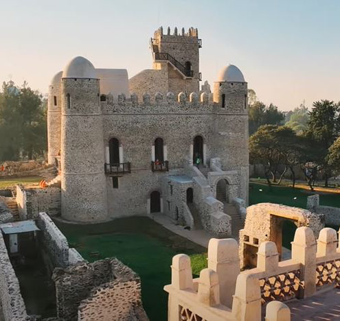
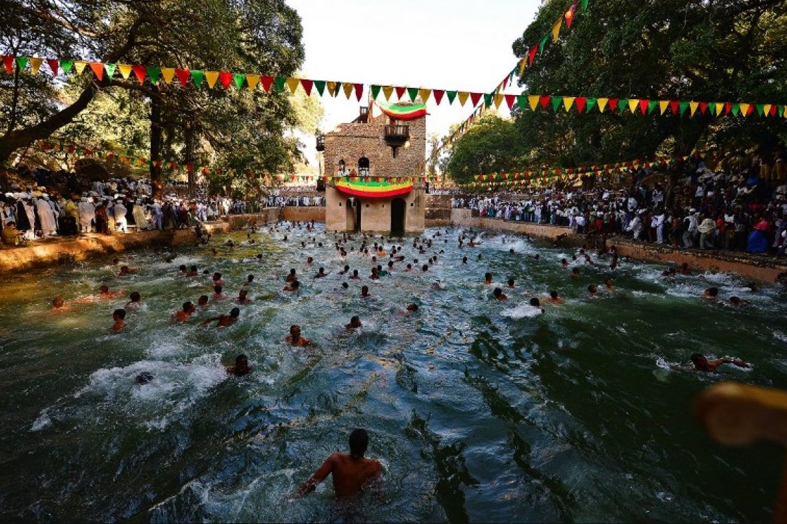
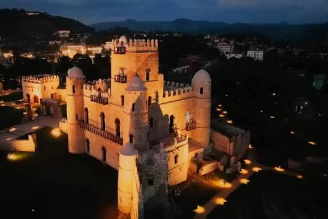
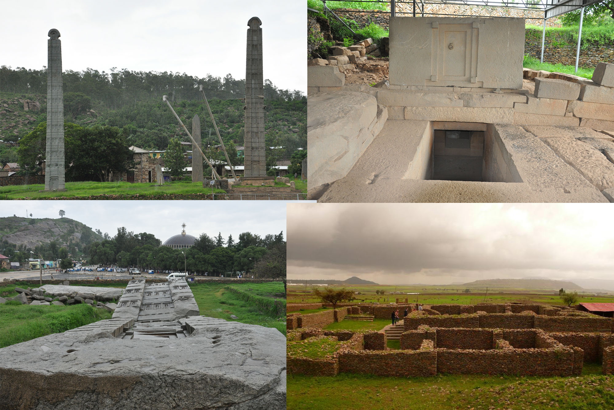
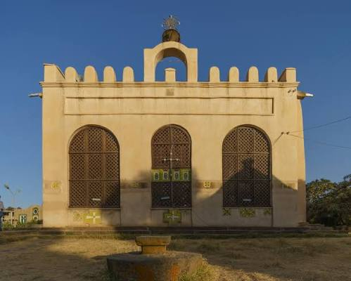
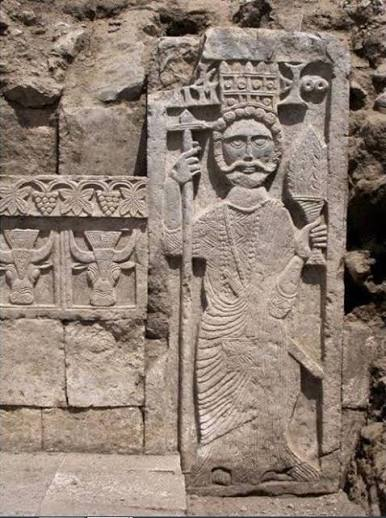
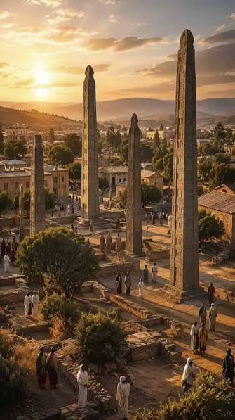
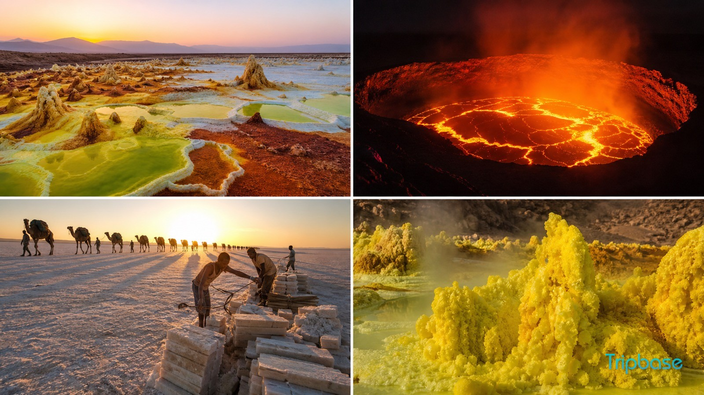
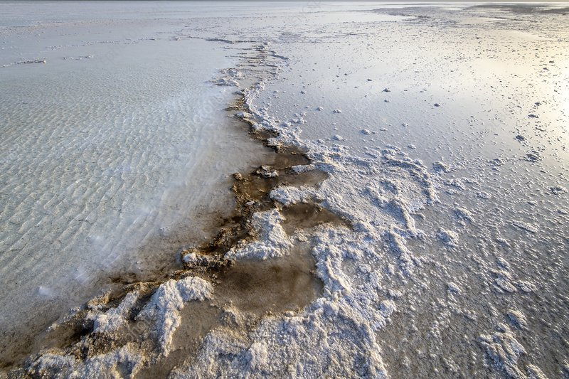

Discover Ethiopia's Places
From ancient cities and historic landmarks to extraordinary natural landscapes, Ethiopia is home to places shaped by history, culture, and nature. Explore some of the country's most remarkable destinations below.
Lalibela
Lalibela is one of Ethiopia's most extraordinary historical and religious destinations, famous throughout the world for its churches carved directly into solid rock. The churches were created during the medieval period and form a remarkable complex of religious buildings connected by courtyards, tunnels, trenches, and passageways.
Rather than constructing the churches by placing stones on top of one another, the builders worked downward into the rock, carefully removing enormous amounts of material to create the buildings. This approach produced structures with detailed doors, windows, columns, arches, and religious decorations. The result is an architectural landscape that appears to emerge from the earth itself.
One of the most recognizable churches is Bete Giyorgis, or the Church of Saint George. The church is carved into a deep rock-cut courtyard and has a distinctive cross-shaped design. It has become one of the most recognizable symbols of Ethiopia's cultural heritage.
Lalibela is more than an archaeological site. The churches remain active places of worship, and religious ceremonies continue to take place there. During major celebrations such as Genna, the Ethiopian Orthodox Christmas, pilgrims gather in large numbers, creating an atmosphere filled with prayer, music, chanting, and traditional religious practices.
The town therefore represents a connection between Ethiopia's medieval past and its living present. Visitors can explore extraordinary architecture while also witnessing traditions that have continued across generations.


Gondar
Gondar is a historic city in northern Ethiopia that became a major political and cultural center after Emperor Fasilides established it as a royal capital in the seventeenth century. For generations, Ethiopian emperors and members of the royal court lived and governed from the city, leaving behind an impressive collection of castles, churches, gardens, and other historic structures.
The best-known historical site is Fasil Ghebbi, a fortified royal enclosure containing several castles and buildings constructed during the Gondarine period. The architecture reflects a fascinating mixture of Ethiopian traditions and outside influences, demonstrating the connections that existed between Ethiopia and other parts of the world.
One of the most famous buildings within the royal complex is Fasilides' Castle, a large stone structure that has become one of the symbols of Gondar. The city is also home to Debre Berhan Selassie Church, famous for its elaborate paintings and beautifully decorated ceiling featuring rows of angelic faces.
Gondar's history extends beyond its castles. The city became an important center of Ethiopian art, literature, religious scholarship, and architecture. Its royal heritage continues to influence the city's identity today.
For visitors, Gondar offers the chance to explore Ethiopia's imperial past while experiencing a living city filled with cultural traditions, historic buildings, markets, and religious landmarks.




Axum
Axum is one of Ethiopia's most historically significant cities and was once the heart of the ancient Aksumite Kingdom, a powerful civilization that flourished in the northern Horn of Africa. The kingdom became an important center of trade, connecting the African interior with the Red Sea and regions beyond. Evidence of this prosperous civilization can still be seen throughout the city in its monumental stone structures, inscriptions, tombs, and archaeological remains.
Axum is particularly famous for its enormous stone stelae, some of which were carved and erected many centuries ago. These towering monuments were connected to the burial traditions and achievements of the Aksumite rulers. The city also contains the ruins of ancient palaces and tombs that provide clues about the organization and technological abilities of the civilization that built them.
Axum is also deeply connected to Ethiopia's Christian heritage. The Church of Our Lady Mary of Zion is one of the country's most important religious sites and has long been associated with Ethiopian Orthodox Christianity. According to Ethiopian tradition, the church is connected with the Ark of the Covenant, making the city an important destination for religious pilgrims.
Today, Axum brings together archaeology, religion, architecture, and living traditions. Walking through the city allows visitors to encounter physical remains of an ancient civilization while also experiencing a place that continues to hold enormous cultural and spiritual importance for Ethiopians.




Danakil Depression
The Danakil Depression is one of the most extreme and unusual environments on Earth. Located in Ethiopia's Afar region, it lies at a very low elevation and is known for its intense heat, vast salt flats, volcanic landscapes, and geothermal activity.
The region exists within an area where tectonic plates are gradually moving apart. This geological activity has contributed to the formation of volcanic features, hot springs, mineral deposits, and other unusual landscapes. In some areas, bright yellow, green, orange, and white mineral formations cover the ground, creating scenery unlike almost anywhere else.
One of the best-known areas is Dallol, where geothermal activity and mineral-rich fluids have produced colorful formations and acidic pools. Nearby areas contain large salt plains that have long been connected with traditional salt extraction.
The Danakil demonstrates how dramatically the Earth's surface can change because of geological forces. Volcanoes, heat, minerals, and tectonic movement continue to shape the region.
Because of the extreme environment, visiting the Danakil requires careful planning and appropriate safety arrangements. Nevertheless, its unusual landscape has made it one of Ethiopia's most distinctive natural destinations.


Back to Home